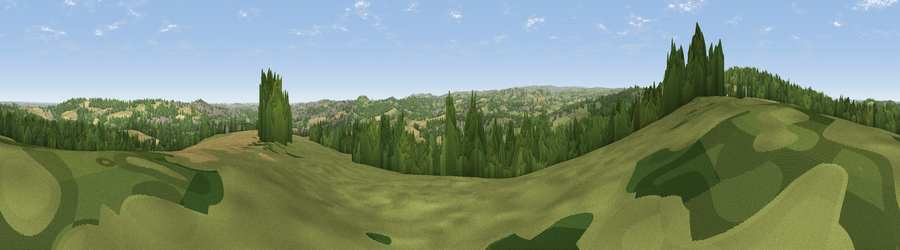

Viewpoint near High Hoyland
#16935 in England · top 22% of its area beats it · near High Hoyland · access?Where it is
The exact computed spot (SE 28625 09975). Click the marker for map links.
Public access: no public right of way or access land is recorded at this exact spot — it may be on private land. Computed from Natural England's CRoW access layer and OpenStreetMap rights of way — not the legal definitive map. Always verify locally.
The view, rendered

A 360° render of this exact spot computed from the terrain model, tree cover and land cover — summer colours, afternoon light, calibrated against photographs of famous viewpoints. Real trees, hedges and buildings will differ in detail.
The panorama
Grey silhouette: terrain skyline in each direction (720 bearings, Earth curvature and refraction included). Dashed green: skyline with trees (+15 m) and buildings (+8 m) as obstacles. Blue strip: how far the ground is visible on each bearing.
Where the view opens
Wedge length = distance to the farthest visible ground on that bearing (vegetation-aware). Rings at 10, 25 and 50 km.
What fills the view
39% woodland · 34% grassland · 21% cropland · 6% built-up
Angular shares of the visible panorama (visual magnitude), not map area. Landscape diversity 0.54 (0–1 Shannon).
Key numbers
More beautiful places nearby
The staircase of upgrades: each row has a higher view potential than everything closer. Driving times are estimates from straight-line distance, calibrated against real road routing — check an actual route before setting out.
| Place | Direction | Drive | Score |
|---|---|---|---|
| Viewpoint near High Hoyland | WNW · 1 km | ~4 min | 58.5 |
| Viewpoint near Woolley | NE · 4 km | ~9 min | 60.8 |
| Viewpoint near Woolley | ENE · 4 km | ~9 min | 66.2 |
| Pool Hill | WSW · 4 km | ~9 min | 66.6 |
| Viewpoint near Hoylandswaine | SSW · 6 km | ~13 min | 71.8 |
| Viewpoint near Hoylandswaine | SSW · 6 km | ~13 min | 72.7 |
| Viewpoint near Stocksbridge | S · 11 km | ~20 min | 73.1 |
| Viewpoint near Jackson Bridge | WSW · 11 km | ~21 min | 73.5 |
53.58559, -1.56907 · source: screening · position refined by local search. Computed location — check access rights before visiting.